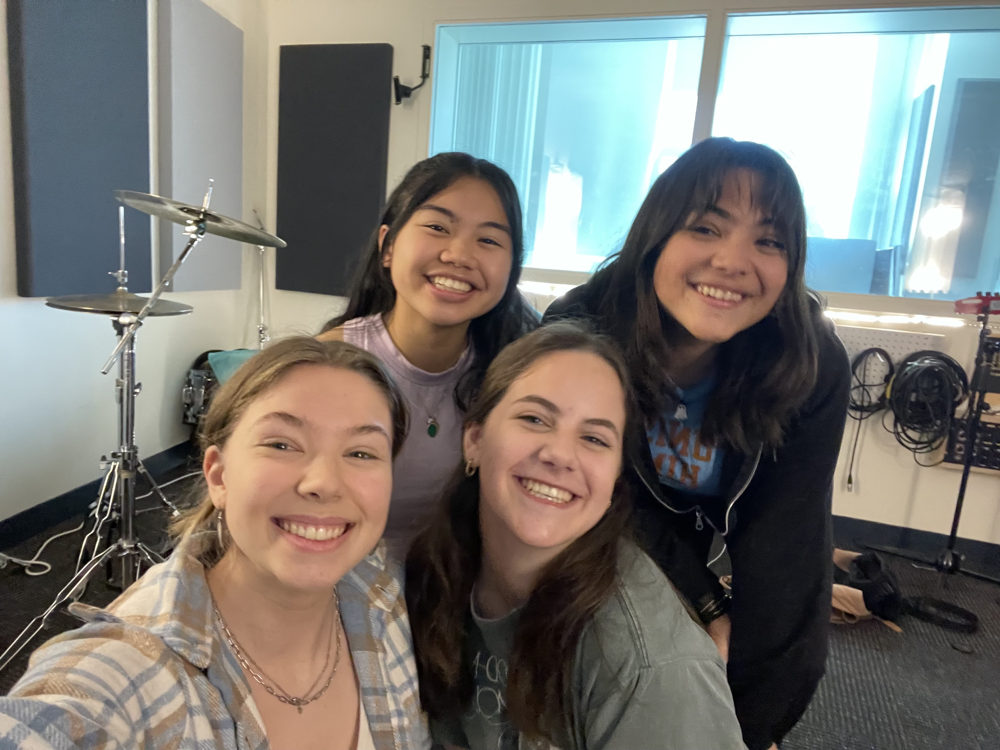

Assorted Media (of my general creation)
My Spotify Profile
I treasure my spotify playlists almost more than anything else I create. To me, they are a reflection of my creative process; the way my brain lists and orders things through music and through feeling.
As of April 2023, I currently have 142 total playlists. That list will grow extensively, at what rate I cannot be sure of. Currently expecting a goal of around 175 by the end of 2023.
My Goodreads Profile
I enjoy reading other people's words as much as I like writing. Maybe more. Time will tell. Check out my Goodreads to see what I'm reading right now (and if I'm on top of my reading challenge yikes)
My friends and I made a podcast! If you can't tell already I really really really like music and will talk about it for a minimum of 6 hours, which is about how much content you have available for you in episode formatting. We are really proud of this project, so if you care to give it a listen it is here for you on Spotify (or wherever else you listen to podcasts).
Check out Unshuffled here
THE VERY EXCITED COLLEGE STUDENTS MAKING A PODCAST FOR YOUR ENTERTAINTMENT
(PLEASE LISTEN)